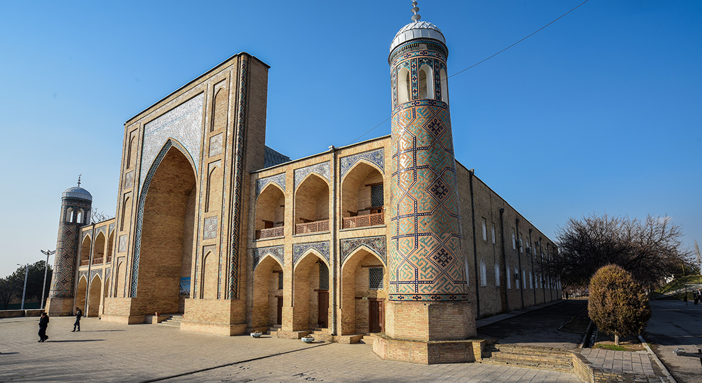
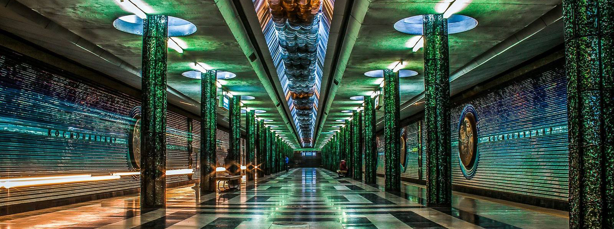

Ташкент – Современный мегаполис

Ташкент – это столица Узбекистана и по совместительству самый крупный город в Центральной Азии.
Топовые достопримечательности
Нукус современный, благоустроенный город, в котором можно увидеть памятники архитектуры и современные постройки. Сюда съезжаются любители искусства и искатели приключений, жизнь в городе кипит событиями. Обязательно посетите:
Климат
Большую часть лета в Ташкенте стоит жара поэтому не забывайте про солнцезащитный крем и головные уборы! Зима в основном мягкая и бесснежная, но не пренебрегайте теплыми вещами, вечером бывает прохладно на столько, что хочется одеть шарф!
Подарки и сувениры
Гуляя по улицам Ташкента, можно найти множество памятных вещей, начиная от мелких безделушек и заканчивая огромными памятными сувенирами. Большая часть сувенирных мастерских находится в старых медресе и на базаре Чорсу. Там вы сможете найти абсолютно все! Вырезанные из дерева поделки, глиняная посуда, национальная одежда, и даже выкованные в местных кузницах ножи и кинжалы!
Кухня
Рестораны Ташкента могут порадовать любого гурмана своей разнообразностью и уровнем обслуживания. В городе вы сможете найти не только национальную кухню, которая в Ташкенте по вкусу отличается от идентичных блюд в других районах страны, но и лучших представителей иностранной гастрономической индустрии. В Ташкенте вы можете попробовать уйгурскую, корейскую, китайскую, японскую, европейскую и даже молекулярную кухню. Но самая вкусная кухня, естественно узбекская! Вы знали, что в декабре 2016 года плов был внесен в список нематериального наследия ЮНЕСКО? Теперь знаете! Приезжайте скорее, чтобы увидеть воочию и попробовать самую вкусную еду в мире! Больше про национальную кухню Узбекистана вы сможете прочитать по этой ссылке.
История
История Ташкента насчитывает более 2 тысяч лет. Одни из первых упоминаний о городе были найдены в летописях, написанных еще во II веке до н.э. В древних китайских источниках Ташкент назывался Ши, что в переводе означает камень, а в раннем средневековье Шаш или Чач. Ученые пришли к мнению, что тюркские племена, заселившиеся на этой территории позднее, позаимствовали название, так как «таш» в тюркских языках тоже переводится как камень. Из-за своего выгодного расположения город считался одним из основных пунктов на Шёлковом пути.
В наше время Ташкент является современным мегаполисом и прекрасно совмещает в своей архитектуре и средневековые постройки, и современные бизнес центры. В городе есть все условия для прекрасного времяпровождения. Здесь сливается воедино многолетняя история и современный стиль жизни. На территории Ташкента работают два международных аэропорта и 2 железнодорожных вокзала. Одной из основных современных достопримечательностей города считается метро. Оно было открыто в 1977 году и является первым в Центральной Азии. Каждая станция имеет свой неповторимый дизайн и уникальную архитектуру.
В Ташкенте можно увидеть и исторические памятники, и современные мечети, прогуляться по восточным базарам, познакомится с тысячелетней историей, и культурой народа в столичных музеях, и конечно же отдохнуть в парках, ресторанах и ночных заведениях города.